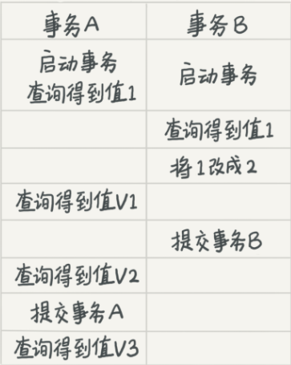
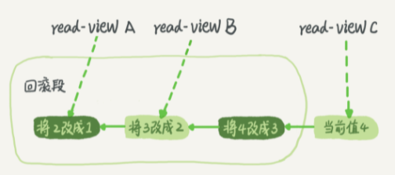

mysql事务隔离
隔离级别
当数据库上有多个事务同时执行的时候，就可能出现脏读（dirty read）、不可重复读（non-repeatable read）、幻读（phantom read）的问题，为了解决这些问题，就有了“隔离级别”的概念。
SQL 标准的事务隔离级别包括：
- 读未提交（read uncommitted）：一个事务还没提交时，它做的变更就能被别的事务看到。
- 读提交是（read committed）：一个事务提交之后，它做的变更才会被其他事务看到。
- 可重复读（repeatable read）：一个事务执行过程中看到的数据，总是跟这个事务在启动时看到的数据是一致的。当然在可重复读隔离级别下，未提交变更对其他事务也是不可见的。
- 串行化（serializable ）：顾名思义是对于同一行记录，“写”会加“写锁”，“读”会加“读锁”。当出现读写锁冲突的时候，后访问的事务必须等前一个事务执行完成，才能继续执行。
假设数据表 T 中只有一列，其中一行的值为 1，下面是按照时间顺序执行两个事务的行为。如下：
mysql> create table T(c int) engine=InnoDB;
insert into T(c) values(1);

我们来看看在不同的隔离级别下，事务 A 会有哪些不同的返回结果，也就是图里面 V1、V2、V3 的返回值分别是什么。
- 读未提交： 则 V1 的值就是 2。这时候事务 B 虽然还没有提交，但是结果已经被 A 看到了。因此，V2、V3 也都是 2。
- 读提交：则 V1 是 1，V2 的值是 2。事务 B 的更新在提交后才能被 A 看到。所以， V3 的值也是 2。
- 可重复读：则 V1、V2 是 1，V3 是 2。之所以 V2 还是 1，遵循的就是这个要求：事务在执行期间看到的数据前后必须是一致的。
- 串行化：则在事务 B 执行“将 1 改成 2”的时候，会被锁住。直到事务 A 提交后，事务 B 才可以继续执行。所以从 A 的角度看， V1、V2 值是 1，V3 的值是 2。
在实现上，数据库里面会创建一个视图，访问的时候以视图的逻辑结果为准：
读未提交：直接返回记录上的最新值，没有视图概念；
读提交：这个视图是在每个 SQL 语句开始执行的时候创建的。
可重复读：这个视图是在事务启动时创建的，整个事务存在期间都用这个视图。
串行化：直接用加锁的方式来避免并行访问。
我们可以看到在不同的隔离级别下，数据库行为是有所不同的。Oracle 数据库的默认隔离级别其实就是“读提交”，因此对于一些从 Oracle 迁移到 MySQL 的应用，为保证数据库隔离级别的一致，你一定要记得将 MySQL 的隔离级别设置为“读提交”。配置的方式是，将启动参数 transaction-isolation 的值设置成 READ-COMMITTED。你可以用 show variables 来查看当前的值。
mysql> show variables like 'transaction_isolation';
+-----------------------+----------------+
| Variable_name | Value |
+-----------------------+----------------+
| transaction_isolation | READ-COMMITTED |
+-----------------------+----------------+
mysql的默认隔离级别是可重复读级别。
事务隔离实现
在 MySQL 中，实际上每条记录在更新的时候都会同时记录一条回滚操作（undo log）。记录上的最新值，通过回滚操作，都可以得到前一个状态的值。
假设一个值从 1 被按顺序改成了 2、3、4，在回滚日志里面就会有类似下面的记录。

当前值是 4，但是在查询这条记录的时候，不同时刻启动的事务会有不同的 read-view。如图中看到的，在视图 A、B、C 里面，这一个记录的值分别是 1、2、4，同一条记录在系统中可以存在多个版本，就是数据库的多版本并发控制（MVCC）。对于 read-view A，要得到 1，就必须将当前值依次执行图中所有的回滚操作得到。
系统会判断，当没有事务再需要用到这些回滚日志时，回滚日志会被删除。
长事务
长事务是运行时间比较长，长时间未提交的事务。应该避免使用长事务。其缺点：
- 意味着系统里面会存在很老的事务视图。由于这些事务随时可能访问数据库里面的任何数据，所以这个事务提交之前，数据库里面它可能用到的回滚记录都必须保留，这就会导致大量占用存储空间。
- 占用锁资源，也可能拖垮整个库。
事务启动方式
MySQL 的事务启动方式有以下几种：
- 显式启动事务语句， begin 或 start transaction。配套的提交语句是 commit，回滚语句是 rollback。
- set autocommit=0，这个命令会将这个线程的自动提交关掉。意味着如果你只执行一个 select 语句，这个事务就启动了，而且并不会自动提交。这个事务持续存在直到你主动执行 commit 或 rollback 语句，或者断开连接。
建议使用 set autocommit=1, 通过显式语句的方式来启动事务。
但是有的开发同学会纠结“多一次交互”的问题。对于一个需要频繁使用事务的业务，第二种方式每个事务在开始时都不需要主动执行一次 “begin”，减少了语句的交互次数。如果你也有这个顾虑，我建议你使用 commit work and chain 语法。
在 autocommit 为 1 的情况下，用 begin 显式启动的事务，如果执行 commit 则提交事务。如果执行 commit work and chain，则是提交事务并自动启动下一个事务，这样也省去了再次执行 begin 语句的开销。同时带来的好处是从程序开发的角度明确地知道每个语句是否处于事务中。
你可以在 information_schema 库的 innodb_trx 这个表中查询长事务，比如下面这个语句，用于查找持续时间超过 60s 的事务。
select * from information_schema.innodb_trx where TIME_TO_SEC(timediff(now(),trx_started))>60
问题
从应用开发端来看：
- 确认是否使用了 set autocommit=0。这个确认工作可以在测试环境中开展，把 MySQL 的 general_log 开起来，然后随便跑一个业务逻辑，通过 general_log 的日志来确认。一般框架如果会设置这个值，也就会提供参数来控制行为，你的目标就是把它改成 1。
- 确认是否有不必要的只读事务。有些框架会习惯不管什么语句先用 begin/commit 框起来。我见过有些是业务并没有这个需要，但是也把好几个 select 语句放到了事务中。这种只读事务可以去掉。
- 业务连接数据库的时候，根据业务本身的预估，通过 SET MAX_EXECUTION_TIME 命令，来控制每个语句执行的最长时间，避免单个语句意外执行太长时间。
其次，从数据库端来看：
- 监控 information_schema.Innodb_trx 表，设置长事务阈值，超过就报警 / 或者 kill；
- Percona 的 pt-kill 这个工具不错，推荐使用；
- 在业务功能测试阶段要求输出所有的 general_log，分析日志行为提前发现问题；
- 如果使用的是 MySQL 5.6 或者更新版本，把 innodb_undo_tablespaces 设置成 2（或更大的值）。如果真的出现大事务导致回滚段过大，这样设置后清理起来更方便。